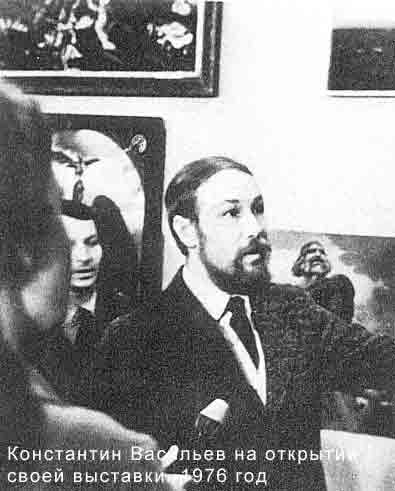
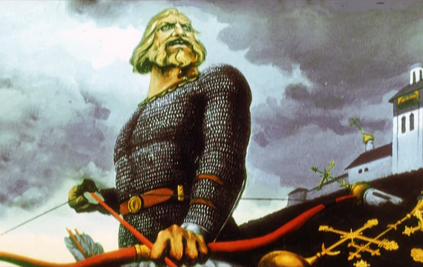

http://smelding.livejournal.com/349574.html
Smelding
Неизвестная картина К.Васильева

Эту картину Константина Васильева не найдешь в его альбомах, изданных Дорониным, не встретишь и в интернетподборках. Ее нет ни на стенах казанского музея художника, как не было на стенах погибшего московского музея. Только черно-белая прорисовка картины, перепечатанная из книги Емельянова "Десионизация", сделанная не то самим Емельяновым, не то рукопашником Беловым, сиротливо скитается из издания в издание, с сайта на сайт, и выглядит, понятно, весьма убого по сравнению с полноцветными картинами Мастера. Правосы на своих форумах уже договорились до того, что "картину выдумали неоязычники", в другом месте я натыкалася на тихую радость какого-то хуманиста - "хорошо, что эту картину не тиражируют"...
А картина была - вон она у Васильева за левым плечом.

Теперь, благодаря evaplanet , сделавшей скрин со старого, советского еще фильма о Художнике, у нас есть более-менее нормальная копия этой картины: "Илья Муромец, стреляющий по церквям"

Константин Васильев "Илья Муромец, стреляющий по церквям"
И он берет-то как свой тугой лук разрывчатой,
А он стрелочки берет каленые,
Выходил Илья он да на Киев-град,
И по граду Киеву стал он похаживать
И на матушки божьи церкви погуливать,
На церквах-то он кресты вси да повыломал,
Маковки он золочены все повыстрелял,
текст полностью
Текст сей записан славянофилом Киреевским. Это к тому, что «Святым» же Илья начал писаться только к XVII веку. До того момента никому в голову не приходило человека с таким послужным списком вносить в церковный реестр. Само по себе приписывание христианства тем, в ком его и в помине нет – это черта достаточно известная. К слову таким образом работают над увеличением числа паствы мормоны. Я же наблюдал самый дикий случай ПМГ с подобным эффектом когда в 2008 году пришёл на какой-то митинг на Славянскую площадь и увидел продавца церковной литературой, среди которой была книжка, на обложке которой была икона… Святослава. На недоумённый вопрос к продавцу был получен ответ: вы ничего не понимаете, на самом деле он был настоящим христианином! Вопросов не задавал больше.
Ф. И. Буслаев, утверждал, что былинный эпос не помнит крещения, а Владимира «изображает даже скорее язычником». «В эпическом типе Ильи Муромца много великих доблестей идеального героя, но все они объясняются с точки зрения общих законов нравственности. Собственно христианских добродетелей в этом герое народ не воспевает». Реплики вроде «постоять за веру православную… ради церквей-монастырей» в устах богатырей и особенно Ильи Буслаев называет «тирадами новейшего изделия», каковые «противоречат его поступкам, которые с точки зрения православия должны казаться святотатством» /Буслаев Ф. И. Русский богатырский эпос. Русский народный эпос. Воронеж: Центрально-черноземное книжное издательство, 1987. С. 99.